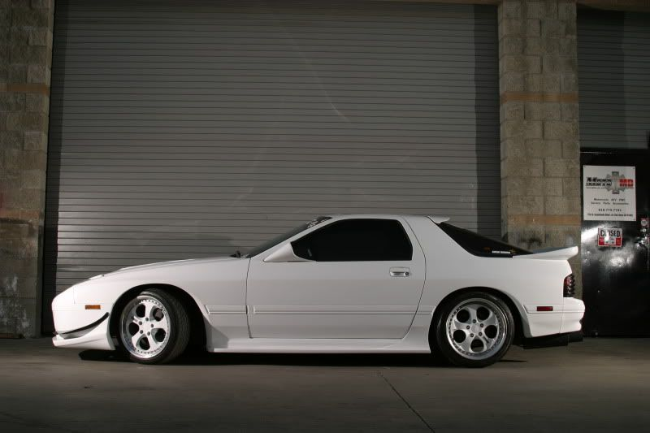

-
Anybody know of any for our cars? I was thinking about cutting up the housing for the third brake light and making a fiberglass one but thought I'd see if there are any I could buy instead. -
No one makes them because there's no market for them in the Z31 community.
1988 300ZX Turbo, Shiro Special #760
1988 300ZX Turbo Automatic (wife's car)
1991 Hard-body 2WD
http://zccw.org/zccw/?page_id=1215 -
^ What reddzx said. You'd have to come up with one yourself (design wise). I've kicked around the idea before but didn't think it would look right because of the bodylines on the roof. That's not to say it wouldn't if it was done right, I would love to see one done.私♥フェアレディ・ゼット
・1984 300zx N/A -
Like the Supra's had back in the 80's? I'm not sure how that would flow with the lines of the back of the car....says the guy with louvers front and rear… HA! Might look ok with a Pantara style of hatch though.Black 1985 na/coupe brought back from the dead.
2000 frontier for work.
2004 PT Cruiser for gettin' grocery's. -
If I was good in fabricating a roof spoiler I would love to have one. I think one done up similar to the supra would be tits…
1988 Nissan 300zx (Improving it one day at a time)
-
As someone said, an angular roof spoiler would look fine on a Z31. That white one is from a Z32.
Imagine this (this took me 1 minute to mock up in MS Paint.)
You are looking at this as if you were standing at the car's right side mirror. One spoiler could be made universal for all hatches no matter if you had a 87+ 3rd brake light or a washer nozzle.
The black edges show wear the roof spoiler would match up with the side edges of the hatch. The blue dotted line represents the flat piece underneath that would mate to the hatch trim piece near the top. That way, some type of 3M adhesive could be used in large flat strips to make sure this thing wouldn't fly off at speed.
The blue line can be more forward and the side edges of the spoiler can extend backwards if need be. That means the spoiler doesn't have to stop ending down the hatch at the trim piece
There is a gap in the middle to permit 3rd brake light or washer nozzle. -
http://elmira.craigslist.org/ctd/3775744252.html
This ones gay though.
I've always wanted to make a little one…never did though. meh. lol- VG30DET (HE341) 86 300ZX - 1982 280ZX Turbo - Headered NA 1986 300ZX 2+2 - 2000 Xterra - -
That's just disgraceful. -
It looks like they thought the old supra roof spoiler didn't have enough gap…I know fabricating one can be done it just comes down to how much time and money you want to throw at it.私♥フェアレディ・ゼット
・1984 300zx N/A -
The S13 or Z32 one probably could be modified to fit the Z31 hatch. Especially with the Z32's roof spoiler having angular edging to being with. -
Messed around a little more in MS paint. Had to find a good side profile picture for the Z31 (thanks Kouki thread). I painted the stock rear spoiler white in both pictures to make it stand out more. Yes, I know I didn't photoshop out the antenna.
This first one shows what a slightly angled up spoiler would look like. It looks fine but would look even better with other slanted spoilers (Avante, TBO, Whale Tail, Wangan, etc).
This second picture is if the roof spoiler ran parallel with a stock spoiler.
-
Second one is much better imo
86T GLL -
Neither do anything for me, that car was perfect the way it was and I wish I still had it.
1988 300ZX Turbo, Shiro Special #760
1988 300ZX Turbo Automatic (wife's car)
1991 Hard-body 2WD
http://zccw.org/zccw/?page_id=1215 -
I would almost angle it down moreDD:
86 Black Turbo 5spd
The Fallen:
84 red n/a auto Slicktop, 86 Black 2+2 n/a 5spd
Parting Currently:
86 White Turbo 5spd, 88 n/a 5spd, 84 AE, 88 Shiro #64
Garage Sale -
If the spoiler was angled downwards, it'd look almost as silly as the black on that Mike posted. It's probably the angle of the picture itself but that indeed is a straight line.
The more I look at it. I think the 2nd one could go with any spoiler (stock or slanted).
Flat roof spoiler with wangan tail.


Copyright © 2006–. All rights reserved. Privacy Policy